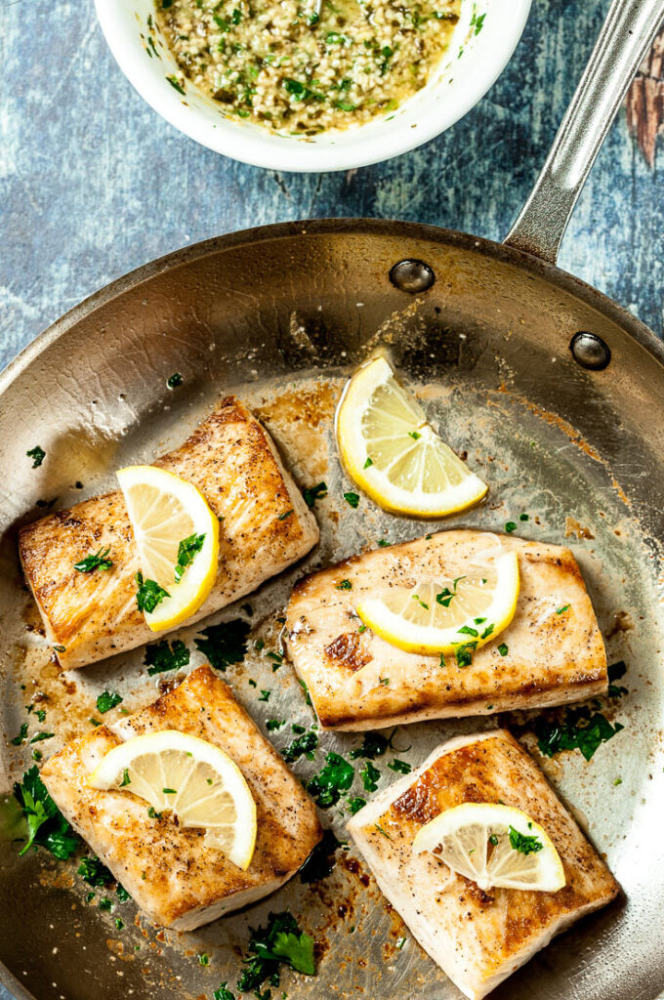

Ingredients List
- 3 tbsp. butter, divided
- 2 tbsp. extra-virgin olive oil, divided
- 4 (4-oz.) Mahi-Mahi fillets
- Kosher salt
- Freshly ground black pepper
- 1 lb. asparagus
- 3 cloves garlic, minced
- 1/4 tsp. crushed red pepper flakes
- 1 lemon, sliced
- Zest and juice of 1 lemon
- 1 tbsp. freshly chopped parsley, plus more for garnish
Directions
- In a large skiller over medium heat,melt 1 tablespoon each of butter
and olive oil. Add mahi-mahi and season with salt and pepper. Cook until
golden, 4 to 5 minutes per side. Trasnfer to a plate.
- To skillet, add remaining 1 tablespoon oil. Add asparagus and cook until
tender, 2 to 4 minutes. Season with salt and pepper and transfer to a plate.
- To skillet, add remaining 2 tablespoons butter. Once melted, add garlic and red
pepper flakes and cook until fragrant, 1 minute, then stir in lemon, zest, juice and
parsley. Remove from heat, then return mahi-mahi and asparagus to skillet and spoon over sauce.
- Garnish with more parsley before serving.
There you go now you have Garlicy lemon mahi-mahi, enjoy.
